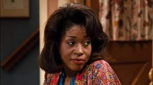

In "Family Matters," the Winslows are all about handling crazy situations, most thanks to their super-nerdy neighbor, Steve Urkel. From his classic "Did I do that?" to his wild inventions, Urkel keeps the family on their toes with loads of laughs and unforgettable moments.
CharactersSteve UrkelPlayed by: Jaleel White Carl Winslow Played by: Reginal Veljohnson Harriette Winslow  Played by: Jo Marie Payton |